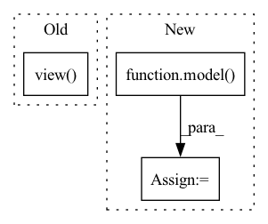

Pattern ID :20287

Before Change
interval = 16
idx = torch.arange(0,T,interval)
rpn_inputs = inputs[:,:,idx]
rpn_inputs = rpn_inputs.transpose(1,2).contiguous().view(N*(T//interval),C,H,W)
print(rpn_inputs.shape)
with torch.no_grad():
proposals = rpn(rpn_inputs)
proposals = proposals.view(N,T//interval,10,4)
After Change
proposals = proposals.view(-1,T//interval,10,4)
if len(inputs) < max_N:
proposals = proposals[:len(inputs)]
outputs = model(inputs, proposals.detach())
// update to the largest batch_size
max_N = max(N, max_N)
else:
outputs = model(inputs)
In pattern: SUPERPATTERN
Frequency: 3
Non-data size: 3
Instances
Fragment ID: 65983199
Project Name: jd730/strg
Commit Name: b98d2a6a9e626ae8be88646109eca0d53f1f4af5
Time: 2020-06-12
Author: jdhwang730@gmail.com
File Name: validation.py
M Class Name: AnonimousClass
N Class Name: AnonimousClass
M Method Name: val_epoch(9)
N Method Name: val_epoch(9)
M Parent Class:
N Parent Class:
M File Name: validation.py
N File Name: validation.py
M Start Line: 40
M End Line: 49
N Start Line: 34
N End Line: 62
'>
Before Change
y_hats = torch.max(logits, dim=-1)[1]
//print(label_to_string(target, id2char))
loss = criterion(logits.view(-1, logits.size(-1)), target.view(-1))
total_loss += loss.item()
num_samples += batch_size
After Change
n_samples += inputs.size(0)
preds = model(inputs. input_length, targets)
loss = criterion(preds.view(-1, preds.size(-1)), targets[:,1:].view(-1))
loss.backward()
nn.utils.clip_grad_norm_(model.parameters(), max_norm=max_norm)
'>
Fragment ID: 65983196
Project Name: qute012/kosr
Commit Name: fad0d9ba92dcbd3024650057784c0a484dc1f8e7
Time: 2021-01-28
Author: ejrwls012@gmail.com
File Name: kosr/trainer/trainer.py
M Class Name: AnonimousClass
N Class Name: AnonimousClass
M Method Name: train(6)
N Method Name: train(6)
M Parent Class:
N Parent Class:
M File Name: kosr/trainer/trainer.py
N File Name: kosr/trainer/trainer.py
M Start Line: 26
M End Line: 35
N Start Line: 26
N End Line: 35
'>
Before Change
w_test = a_test[_].repeat_interleave(img.shape[0], dim=0)
// w_test = a_test_.sample((img.shape[0],))
if is_mlp:
img = img.view(img.shape[0], -1)
output = model(img, w_test, fac).cpu().numpy()
outputs[_, index] = np.concatenate([output, label], axis=1)
if with_acc:
After Change
indice += [_]
for _ in range(num_bs):
w_test = a_test[_].repeat_interleave(img.shape[0], dim=0)
output = model(img, w_test.cuda()).cpu().numpy()
outputs[_, index] = np.concatenate([output, label], axis=1)
ret += [outputs]
if with_acc:
'>
Fragment ID: 65983208
Project Name: sungbinlim/neuboots
Commit Name: 482452e39a21d91892b4d24c84ef16529d0e0de0
Time: 2020-09-30
Author: phelahab@gmail.com
File Name: utils/jupyter.py
M Class Name: AnonimousClass
N Class Name: AnonimousClass
M Method Name: infer(7)
N Method Name: infer(8)
M Parent Class:
N Parent Class:
M File Name: utils/jupyter.py
N File Name: utils/jupyter.py
M Start Line: 90
M End Line: 115
N Start Line: 91
N End Line: 121